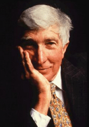
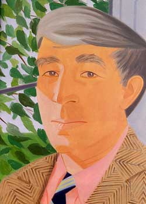

.John Updike [1932 - 2009]
Khi cặp lông mày nhíu lại làm cho chiếc mũi dài đầy nếp nhăn là lúc John Updike [ 1932 - 2009 ] hể hả phá ra cười. Nhà văn Mỹ rất được mến mộ hiện nay sắp cho ra đời một hợp tuyển về những bài viết về văn học cổ điển châu Mỹ và châu Âu, từ Kafka đến Claude Simon dưới tiêu đề Giao lưu văn học, và một thiên truyện mang tên Những nhà phù thủy của Eastwick. Updike có phải là một tài năng văn học đương thời không? Nhiều người cho là thế. Một người dành được hàng loạt giải thưởng và danh hiệu về văn học, và được giới trí thức ở New York chiều chuộng, Updike giống như nhân vật Henry Bech của ông là “một chuyên gia nổi tiếng về những vấn đề phi lý”.
* Có phải ông theo Thanh giáo không?
– Không đâu. Tôi là người vui chơi, nồng nhiệt, thoải mái và trần tục. Tôi được dạy dỗ theo nền tôn giáo cải cách, mà tôn giáo cải cách của Luther thì chẳng giống chút nào với Thanh giáo, ông biết đấy.
* Thế sao?
– Vậy đấy. Có thể tôi là một tín đồ Thanh giáo mà không tự giác. Tôi cảm thấy thoải mái trong cơ thể của chính mình, và giới tự nhiên không làm tôi sợ hãi.
* Người ta thường bảo ông là người được thiên phú, và một thần đồng…
– Tôi chả thích điều đó lắm. Nhưng rốt cục thế vẫn hơn là không có gì. Tôi bắt đầu viết từ khi còn rất trẻ. Tôi làm việc rất nghiêm túc và cần mẫn. Tôi đã học nhiều. Tôi không đến nỗi khờ khạo như các chàng trai người Mỹ vào trạc tuổi tôi.
* Hawthorne và Melville, người mà ông tỏ lòng kính trọng trong cuốn “Giao lưu văn học”, vốn bị ám ảnh bởi cái trong trắng và điều tội lỗi. Ông có nghĩ rằng ông gần gũi họ chăng?
– Đúng vô cùng. Đặc biệt là Hawthorne. Tôi còn là một dân miền New England. Dân miền này có một cảm nhận thực tế chân xác. Họ thích miêu tả sự vật. Nhưng mà rồi chẳng phải người này hay người nọ là những người theo đạo thiên chúa chính thống. Bị ám ảnh ư? Có nhà văn nào mà không bị một cái gì đó ám ảnh.
* Định nghĩa của ông về sự vinh quang trong văn học?
– Có thể vươn tới những độc giả xa xôi ở bên kia những đại dương.
Ông là ai? Nhã nhặn hay kiêu sa? Cay cú hay đôn hậu? Nhiệt tình hay chán chường? Người ta nói rằng những người dân vùng Massachusett đều ít nhiều có dáng dấp như thế. Cao, thanh tú, lịch thiệp, con người vốn được tiếng là “nhà viết tiểu thuyết thành công” của nước Mỹ có một sự quyến rũ đối với những ai tiếp xúc với ông.
* Ông có tin vào Chúa trời không?
– Có đấy, tôi cố tin hơn là mình có thể. Thực ra tôi là một tín đồ hạng trung bình.
* Tuy nhiên, những tác phẩm của ông lại không hướng tới chu nghĩa lạc quan?
– Những truyện tôi viết nhằm nói lên cái thế giới giống như tôi nhìn thấy. Một thế giới mà những ý định tốt đẹp lại dẫn đến sự tồi tệ, nơi mà con người đấu tranh chống sự sợ hãi, nơi mà tình yêu ngày một nhạt phai. Picasso cũng nhai ngốn ngấu cuộc sống, nhưng thế giới quan của ông lại bi đát.
* Ông nói nhiều về Flaubert rằng ông ta là “một con gấu ghét bỏ cuộc sống”. Phải chăng là một định nghĩa xác thực về các nhà văn?
– Tôi không phải là kẻ chán đời. Tuy vậy, Flaubert làm tôi say mê. Sự xa lánh thế giới của ông là đúng. Bi kịch của ông dẫn ông đến cái tinh chất và làm ông trở thành một tấm gương anh hùng.
Công chúng văn học thường trầm trồ khen ngợi John Updike là một nhà văn tuyệt diệu.
Tờ Washington Post viết: “Bất cứ cuốn sách nào mang tên tác giả Updike đều là một sự kiện”. Còn tờ The New York Timescoi ông là “nhà văn nhiều thiên phú nhất của thế hệ ông”.
Tập tạp văn của Updike được coi là một tiếng nói dính líu đến nghệ thuật cuộc sống, nghệ thuật về sự kinh ngạc (The New York Times) cũng như tác phẩm Nhân Mã là sự chiến thắng của tình yêu và nghệ thuật, với một giọng văn tuyệt diệu (Washington Post). Về cuốn Về cái trại tạp chí văn học Harpers viết Updike có con mắt của một họa sĩ về hình thể, đường nét và màu sắc, có cái tài của nhà thơ về phép ẩn dụ, và có cái sở trường của người kể chuyện. Thế rồi sau đó điều gì đã xảy ra?
Giới phê bình văn học Mỹ có lúc nói đến một sự đột phá trong văn hư cấu, đến thành tựu mới về một thái độ mới và một phương pháp sáng tác mới, và những điều này lại gần gũi với tác phẩm Lông chim câu.
Thật vậy, thế giới mà John Updike quan tâm miêu tả là một thế giới mà sự hòa hợp của nó đòi hỏi những cảm quan và hình thức thể hiện tinh tế, những nỗi đau đớn và nhức nhối của thế giới hiện đại, những vấn đề của sự quay tròn không ngớt của hôn nhân thành thị cũng như vùng ngoại ô, vấn đề tình bạn, tội lỗi và vô tội. Updike nắm bắt và thể hiện bằng một cách nhìn một khả năng quan sát tài tình những thân phận con người đầy rối loạn của xã hội Mỹ hiện đại trong sự trần trụi tột cùng của nó.

.Người hầu bàn hỏi John Updike cần thứ thức uống nào? Với bao nhiêu nhà văn lớn của nước Mỹ trước đây và bây giờ, câu trả lời - vào lúc 4 giờ chiều - thường giống như đặt bữa tiệc Giáng sinh của hãng IBM cho quầy rượu. Nhưng Updike chọn dùng trà. Cùng lúc đó, từ một chiếc bàn bên cạnh, người ta hỏi nhau: “Có phải John Updike đấy không nhỉ?”. Sự trùng hợp này làm người ta nghĩ đến sự nổi tiếng và sự tàn tạ, những hình phạt của thành tựu văn học ở Mỹ. Các nhà phê bình, đặc biệt là người Anh, hay viết về những áp lực đặc biệt đối với các tác giả Mỹ: một sản phẩm của cường độ chung về văn hóa và sự khát khao của một đất nước về một nền văn hóa có bản sắc. Người ta có thể thống kê về nạn nghiện rượu, tự tử, suy sụp thần kinh, những bài diễn thuyết điên cuồng, về những vụ tranh cử…
Tại bữa trà này, một nhà phê bình văn học, Mark Lawson hỏi Updike: “Xem ra anh còn tỉnh để có thể tránh đi được cái bẫy đó”.
“Phải rồi”, Updike đáp, chặc lưỡi, “Tôi vẫn còn sống nhăn răng”.
“Và mắn đẻ nữa chứ”. Lawson tiếp. Đấy là cách nói nhún. Knoff, nhà xuất bản của Updike, vừa rồi đã phải thu nhỏ lại khổ chữ của trang giới thiệu tác phẩm cùng một tác giả trên sách của ông để có thêm chỗ cho tác phẩm mới. Đến nay không kể truyện viết cho thiếu nhi, tất cả là 36 cuốn gồm tiểu thuyết, truyện ngắn, thơ, khảo luận và hồi ký. Cuốn thứ 37 Hồi ức về chính quyền Ford (một cái tên sách tư liệu ngụy trang cho cuốn tiểu thuyết thứ 15 của ông) xuất bản vào cuối tháng 3-1993.
Updike bình phẩm: “Quả thỏa đáng khi nói là tôi đã ý thức được về tình trạng ốm yếu của bao nhiêu nhà văn trước tôi. Về mặt lịch sử mà xét, rất hiếm những nhà văn không bị rệu rã từ tuổi 35. Do một số lý do. Trước hết, Mỹ là một xứ sở tôn vinh cái trẻ trung. Người ta có thể thấy rất rõ trong trường hợp Hemingway. Viết trước hết từ sức sống trẻ trung, về một thế giới ngây thơ vẫn mang những hạt sương mai. Nhưng đến lúc sương tan, thì cả tác giả lẫn độc giả đều có thể trở nên chua chát”.
Vẻ mặt của Updike bao giờ cũng ánh lên sự nhanh nhạy, hóm hỉnh. Bởi thế, vào tuổi 60, nhà văn Mỹ này có cặp mắt vẫn còn ướt át. Độc giả của ông cũng thế: như thể để chứng minh rằng ngòi bút của ông không chịu tuân theo cái biểu đồ mà ông vừa nói - Updike đã nhận hai giải Pulitzer vào tuổi 50 và 59.
Hầu bàn mang trà tới. Như chơi vĩ cầm với dụng cụ dùng trà, ông tiếp tục: “Thế hệ ấy, hầu hết đối với nam giới họ uống quá nhiều. Đặc biệt là Faulkner, gây ấn tượng mạnh là Hemingway, còn Fitzgerald thì vô hồi kỳ trận…”. Khi nói, cũng giống như khi viết, một dấu ấn của phong cách Updike là việc chọn lựa và đặt vị trí của trạng từ và tính từ: Một sự hòa trộn và chọn lọc sinh động và đầy nhịp điệu. “Bản thân tôi, tôi cho thật là vui khi tìm thấy cách kéo dài năng lực mình như Henry James đã làm. Từ 35 năm trước, tôi đã bắt đầu nghề nghiệp của mình giống như một nha sĩ hành nghề, có mặt nơi làm việc hàng ngày và đúng giờ giấc”.
Trong vòng 15 năm qua, ngày nào ông cũng viết ít nhất là 1.000 từ. Còn việc chọn thức uống cũng là có lý do của nó: Sức khỏe của ông cần kiêng rượu vì bệnh suyễn và kiêng cà phê vì huyết áp cao. Như một hoán dụ, sở dĩ Updike cần phải uống trà vì như ông nói: “Hemingway đối với tôi là một nhà văn xuất sắc của Mỹ trong thế kỷ XX. Văn phong của ông là cái mà chúng ta mơ ước. Nhưng sai lầm của ông mà ta có thể rút ra là: Sự cạn kiệt quá sớm, sự lạm dụng sức khỏe của mình, sự liều lĩnh trong cuộc sống cá nhân, và sự lo sợ viết về cái mà ta có thể gọi là đời thường. Ông đã tìm mọi cách để tránh những đề tài về cuộc sống hàng ngày của người dân Mỹ. Còn tôi thì lại bằng mọi cách lặn ngụp trong đó…”.
Trên biểu đồ sự nghiệp của sự nghiệp John Updike, trước tiên người ta coi ông là một nhà thơ viết văn xuôi, tiếp đó là một nhà văn đi sâu vào tình dục, và gần đây nhất là một người ghi chép lịch sử hiện đại Mỹ.
Sinh năm 1932 tại Pennsylvania từ một gia đình gốc Hà Lan, cha ông là một giáo học, còn mẹ là một nhà văn hạng hai. John Hoyer Updike là con một, còn Pennsylvania là một bang lúc đó mang tính chất thôn dã lỗi thời.
Hết phổ thông, Updike trở thành họa sĩ biếm họa, sau đó làm cho tờ New Yorker và viết hàng loạt truyện ngắn và tiếp đó cho ra đời tác phẩm Thỏ, chạy đi (Rabbit, run) (1960).
Tác phẩm này kể lại giai đoạn gieo neo về đời sống hôn nhân năm 1959 của Harry “Rabbit” Angstrom, một dân gốc Hà Lan lì xì ở Pennsylvania, là một người mà thời hoàng kim là ngôi sao bóng rổ tại một trường cao đẳng thời trẻ. Sau đó cứ 10 năm Updike lại trở lại với Rabbit: Rabbit trở lại (1971), Rabbit giàu có (1981) và Rabbit yên nghỉ (1990). Những truyện này chen nhau những cảnh ngộ của cuộc sống gia đình: Lúc đi tắm, vợ Harry dìm chết đứa con gái trong những tình huống khả nghi, khả năng về một cô bồ đã đẻ cho ông ta một đứa con bất hợp pháp… Sự kiện và tâm trạng của người Mỹ trong 4 thập kỷ - các vị tổng thống, chiến tranh, những quan hệ tình dục, các thời thượng văn hóa. Tất cả cuốn lại với nhau như những dòng thời sự do một nhà thơ viết ra.
Vào giữa hai tập đầu, Updike đã tạo ra một sự nổi danh khác: Một nhà văn lang thang về tình dục. Những cặp vợ chồng (1969) nói về quan hệ bộ tam, bộ tứ dưới thời Kennedy - và vì thế người ta mệnh danh ông là nhà văn “porno” về hôn nhân, dưới cách viết bóng bẩy. Chính vì thế, lời kết tội thực sự đối với Updike là giọng văn “chải chuốt đáng ngờ”. Trước tiên là do những câu văn đầy cá tính của ông ánh lên bằng những tính từ và những hình ảnh khiến chúng trở nên kiêu sa về hình thức hơn là hàm chứa về nội dung. Người ta cũng còn cho văn ông là quá trau chuốt.
John Updike, thường được ví như nhà văn De Sade về hôn nhân và nhà văn Carlyle về tình trạng suy thoái của Mỹ. Ông có một cảm quan đặc biệt thính nhạy. Mà quả tình, chứng khịt mũi của ông do bệnh suyễn hay do cố tình làm cho chiếc mũi đẹp của ông cứ run rẩy khiến người ta cứ liên tưởng tới một cần ăng ten hay một chú thỏ. Với những chi tiết sinh động trong tác phẩm của ông, người ta có cái ấn tượng là đầu óc ông thường xuyên tiếp nhận các dữ kiện. Cái cảm giác về một nhà văn không bao giờ rời bỏ công việc của mình còn được nhấn mạnh bởi cách chuyện trò của ông, cách ăn nói và miêu tả của ông.
Những hồi ức về chính quyền Ford là một tác phẩm thuộc giai đoạn sau và phóng túng của một tác giả lớn, cố tình kết hợp một chủ đề cũ với một nỗi ám ảnh cá nhân mơ hồ. Chủ đề thứ nhất là ngoại hình và những méo mó của một gia đình, chủ đề thứ hai là chính quyền của James Buchanan, một đảng viên lập lờ của đảng Dân chủ, là Tổng thống cuối cùng trước cuộc nội chiến Mỹ. Là một người sinh trưởng ở Pennsylvania, Updike đã luôn bị thu hút bởi vị tổng thống duy nhất xuất xứ từ bang này. Năm 1974, ông đã viết một vở kịch có tên là Buchanan đang chết.
Trong cuốn tiểu thuyết mới, nhân vật Alf Clayton, một học giả ở New Hampshire đang biên soạn (vào năm 1990) một tài liệu về những năm của chính quyền Ford - một con người làm phó tổng thống rồi tổng thống mà không hề được bầu vào các chức vụ đó. Tổng thống Ford thường được đi kèm với từ “pardon” (xin lỗi) mang tính chất một câu hỏi bởi vì ông ta chẳng hiểu gì mấy về vấn đề người ta đặt ra với ông. Updike nhận xét: “Tôi ngạc nhiên về việc mặc dầu chúng ta có tất cả 42 tổng thống, thì rất có thể ông ta là người đã bị bỏ quên. Khi tôi nói với người ta về cái tít của cuốn tiểu thuyết, họ thường mỉm cười, tưởng là tôi nhắc đến một câu nói đùa cũ…”.
Khi biên soạn tài liệu này, Clayton lại thường bị ám ảnh bởi những tư liệu về tiểu sử của Buchanan - cả hai đều là hai tổng thống bị quên lãng từng cai trị đất nước Mỹ vào những thời kỳ khủng hoảng. Những ký ức sâu đậm của Clayton thời chính quyền Ford còn là chuyện của ông ta, năm 1974, muốn từ bỏ vợ con để sống với một cô bồ. Điều nghịch lý là mặc dầu Ford là một kẻ vụng về bị hất ra khỏi chiếc giường, nhưng thời cầm quyền của ông lại trùng hợp với thời đại đỉnh cao của người Mỹ đua nhau chui vào giường ngủ. Đây là trào lưu của thập kỷ 70, thời đại Tiền - SIDA, và các vấn đề hạn chế sinh đẻ và bệnh hoa liễu - ít nhất là trong các tầng lớp tử tế - chưa nảy sinh. Theo Updike, những năm giữa thập kỷ này hé ra một cánh cửa sổ cho một cơ hội tình dục giữa việc tìm ra thuốc tránh thai và sự phát sinh bệnh SIDA.
Người ta có thể tự hỏi: Nếu trong một cuốn truyện về thời này, liệu Updike có cảm thấy buộc phải giới hạn trong sinh hoạt tình dục an toàn không? Updike liền vặn lại: Có người nào trong gia đình Rabbit dùng bao tránh thai không nhỉ? Mà thực, việc đó đã được nói đến trong tập truyện cuối cùng của bộ tứ tiểu thuyết về Rabbit. Và Updike kiêu hãnh nói: “Đấy anh thấy không, cái tình dục an toàn hiện đại có trong truyện của tôi rồi đấy!”.
Về bộ tiểu thuyết saga Rabbit, độc giả của ông có phần miễn cưỡng chấp nhận cái chết của nhân vật. Họ hy vọng rằng ông sẽ cho ra tiếp tập năm vào bước ngoặt của thế kỷ sắp kết thúc vì giống như nhân vật huyền thoại Elvis, đã không thực sự chết, và có thể cung cấp cho những hồi ức về chính quyền Clinton hiện nay. Tác giả có vẻ suy nghĩ và nói hình như quả là ông đã viết bộ sách này khá hơn những tác phẩm khác và cũng có thể có cách để viết cuốn thứ năm: Một tác phẩm về đám tang của gia đình Angstrom, hay vấn đề người con gái có phải là con của Harry hay không đã bỏ ngỏ. Lập luận của ông là ông sẽ 67 tuổi vào kỳ hạn xuất bản tới của một cuốn sách về Rabbit và có rất ít tiền lệ lịch sử trong văn học Mỹ khi một tác phẩm hàng đầu lại được in ra vào cái tuổi của ông. Nhưng các tác phẩm thứ 38, 39 và 40 của Updike đang chuẩn bị in - một tuyển tập thơ, một loạt truyện ngắn và một tiểu thuyết lấy bối cảnh Braxin. Ông đã thách thức cái mẫu của đời sống sáng tác trong văn học Mỹ thành công đến mức mà chừng nào ông còn gắn với tách trà thì chừng đó khả năng sinh đẻ giống như loài thỏ của ông vẫn có thể đảm bảo cho việc tái tạo ra một thiên tiểu thuyết nữa về Rabbit.